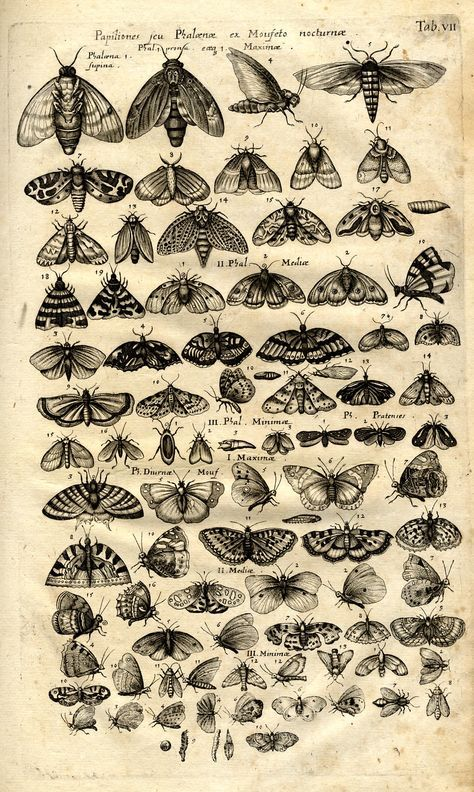

Mariposa
Las mariposas son insectos pertenecientes al orden Lepidoptera, que se caracterizan por tener alas membranosas y escamosas. Son conocidas por su belleza y variedad de colores, lo que las convierte en uno de los insectos más apreciados y estudiados. Existen alrededor de 180,000 especies de mariposas en todo el mundo, distribuidas en diferentes hábitats, desde los trópicos hasta las regiones polares. Son especialmente abundantes en áreas con clima cálido y húmedo, como las selvas tropicales, pero también se encuentran en bosques, praderas y jardines.
Su cuerpo se divide en tres partes principales: cabeza, tórax y abdomen. Tienen dos pares de alas cubiertas por escamas, que les proporcionan una amplia variedad de colores y patrones. Estos colores brillantes y llamativos son utilizados como mecanismo de defensa o para atraer a posibles parejas.
Las mariposas pasan por un ciclo de vida completo que consta de cuatro etapas: huevo, larva (oruga), pupa (crisálida) y adulto. Durante la etapa de oruga, se alimentan de hojas y experimentan varias mudas hasta que alcanzan la etapa de pupa. En la crisálida, la mariposa se transforma internamente hasta que finalmente emerge como adulto.
El aparato bucal de las mariposas adultas está adaptado para la alimentación de néctar de flores. Poseen una probóscide enrollada que les permite acceder al néctar en los pétalos de las flores. Además del néctar, algunas especies también se alimentan de frutas en descomposición, savia de árboles o incluso de materia en descomposición.
Las mariposas son conocidas por su habilidad para volar. Sus alas grandes y ligeras les permiten moverse con agilidad en el aire. Pueden volar a diferentes alturas y velocidades, desde vuelos rápidos y erráticos hasta vuelos más suaves y controlados.
Estos insectos son polinizadores importantes, ya que mientras se alimentan de néctar, recogen polen en su cuerpo y lo transfieren de flor en flor, ayudando a la reproducción de las plantas. Además, su presencia en un ecosistema indica un ambiente saludable y diverso.
Las mariposas muestran una amplia diversidad de especies y adaptaciones a diferentes hábitats. Se encuentran en todo el mundo, desde las regiones tropicales hasta los climas más fríos. Algunas especies incluso realizan migraciones masivas a lo largo de grandes distancias.
Las mariposas son animales voladores terrestres, que viven en todas las plataformas continentales, excepto en la Antártida. Suelen preferir los ambientes con mucha vegetación, especialmente las que se alimentan de néctar, dado que allí abundan las flores y las oportunidades alimenticias para las orugas.
La mayor concentración de especies se halla en las selvas tropicales y en los bosques bajos y de piedemonte, aunque se las puede hallar adaptadas a casi todos los hábitats. Existen también especies urbanas, generalmente de polillas, cuya coloración grisácea o marrón se adapta al ambiente contaminado y repleto de concreto.
Durante su época larvaria o de oruga, las mariposas poseen un aparato mandibular que con el que consumen enormes cantidades de materia orgánica vegetal, como hojas, tallos, raíces, frutos, y pueden constituir verdaderas plagas en plantaciones humanas. Dependiendo de la especie, estas orugas pueden incluso ser carnívoras, alimentándose de otros insectos más pequeños.
Las mariposas adultas se alimentan en su mayoría de néctar floral y otras sustancias líquidas que puedan chupar o lamer usando su aparato bucal en forma de probóscide (una suerte de lengua retráctil). Es por ello que frecuentan las flores, llevando a cabo así una importante labor de polinización de las plantas.
Sin embargo, también hay especies dotadas de un sistema masticador que les permite ingerir polen, esporas de hongos y otras sustancias semejantes, o especies parásitas que se alimentan de sangre de animales superiores. Hay incluso especies cuya vida adulta es sumamente breve y centrada frenéticamente en la reproducción, de modo que ni siquiera poseen los medios para alimentarse.
